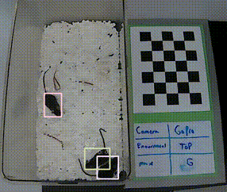
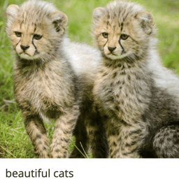

Gaurav Kaul
Home
Research
Projects
Blog
My name is Gaurav.
Spotlight

DAMM for the detection and tracking of multiple animals within complex social and environmental settings
Gaurav Kaul
, Jonathan McDevitt, Justin Johnson, Ada Eban-Rothschild
BioArxiv 2024
[project page]
[code]

RedCaps: Web-curated image-text data created by the people, for the people
Karan Desai,
Gaurav Kaul
, Zubin Aysola, Justin Johnson
Neurips 2021
[project page]
[code]
Maintained by: Gaurav Kaul